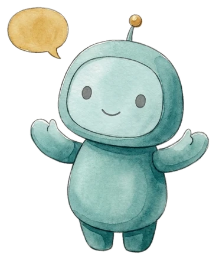
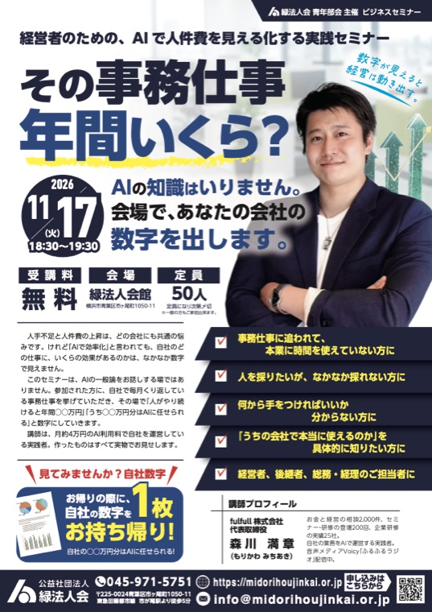
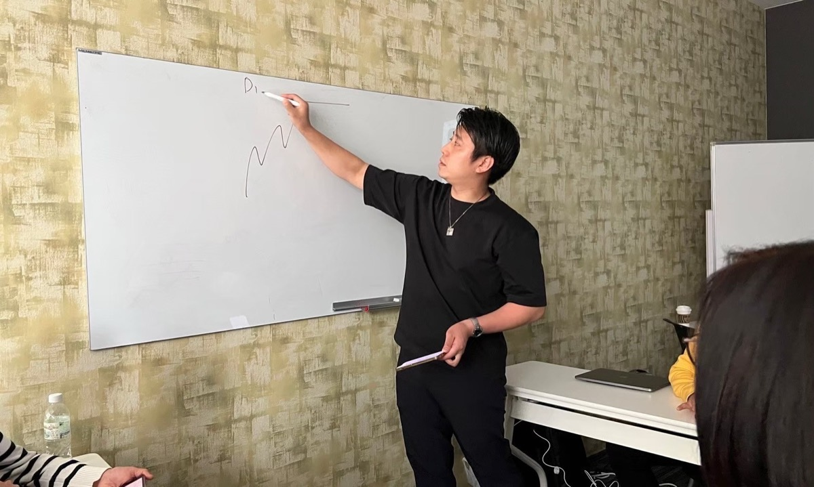

AIを「見る」から、
AIに「任せる」へ。
自分の仕事をひとつ、AIに渡してみる2時間
サイバーシルクロード八王子 御中
ご担当：小松 雄貴 様

PC持参（スマホ可）
・実務担当の方
（御会の枠に合わせます）
3か月後の、会員企業の朝
朝9時。
パソコンを開くと、昨日届いた問い合わせメールが仕分けされ、返信の下書きが並んでいます。
先週の売上は表に入り、月次の報告文はもう書けています。
社長がやるのは、目を通して「これで出して」と言うことだけ。
特別な会社の話ではありません。
毎月くり返している事務をひとつずつAIに渡していった会社の、ふつうの朝です。
「体験」のあとに、必ず来る壁
御会の11月19日「AI体験セミナー」のご案内を拝見しました。
3月に続いての開催とのこと、会員企業の皆さまの関心の高さを感じます。
資料を聴ける形にする、社内の問い合わせにAIが答える、文章から図を作る。
AIが「できること」を知る入口として、とてもよい内容だと思います。
「すごいのは分かった。
で、明日からうちの仕事は誰がやるの？」
体験のあと、会社に戻った方が必ずぶつかるのが、この問いです。
AIに質問はできるようになった。
けれど、毎月くり返す事務はまだ全部、人の手の中にある。
ここで止まってしまう会社が、とても多いのです。
止まる理由は、AIの「種類」にあります
いま多くの方が触れているAIは、チャットの画面で質問に答えてくれる「見るAI」です。
答えは出ますが、その先の作業は人がやります。
一方で、この1年で広がってきたのが、指示をするとパソコンの中で実際に作業を進めてくれる「動くAI」です。
ファイルを作る、表を更新する、決まった時間に下書きを並べる、までを済ませます。
fulfullが研修で使っているのは、この「動くAI」の代表格であるClaude Code（クロード コード）です。
プログラマー向けの道具だと思われがちですが、話し言葉で指示ができ、事務の自動化にそのまま使えます。
当日の中身（2時間）
講義は最小限にして、参加者ご自身の仕事を題材に、その場でAIが動くところまでをお見せします。
御会のAI体験セミナーと同じ、2時間・PC持参の形です。
- 0:00実物の公開（15分）
講師の会社で、毎朝AIが済ませている仕事を画面でそのままお見せします。
報告書・案内文・資料づくり・SNS投稿。どれも日々の実物です。 - 0:15「見るAI」と「動くAI」の違い（15分）
Claude Codeとは何か、何ができて何ができないかを、専門用語なしで3つにまとめます。
- 0:30その場で動かす（30分）
参加者から「毎月くり返している仕事」を2〜3件挙げていただき、講師の画面でClaude Codeに渡します。
表の集計から報告文まで、問い合わせメールの返信下書きまで、動くところを見ていただきます。 - 1:00自分の仕事で、手を動かす（35分）
お手元のPCで「最初にAIに渡す仕事」を1つ選び、AIへの指示書を1枚書いていただきます（型はこちらで配布）。
書けた方の指示書は、その場で講師の画面で実際に動かします。 - 1:35使える制度の話（10分）
東京都のDXリスキリング助成金と、国の人材開発支援助成金の要点を、中立にご紹介します。
制度の紹介までで、申請のご相談は社会保険労務士・労働局をご案内します。 - 1:45質疑（15分）
「うちのこの仕事は渡せるか」を、個別にお答えします。
参加された方が持ち帰るもの
- 自社で「最初にAIに渡す仕事」が1つ決まり、その指示書が手元に残る
- 「見るAI」と「動くAI」の違いが分かり、社内で説明できるようになる
- 当日動かした自動化の手順と、始め方の記事（講師のサイトで公開中）
持ち帰り：自社用の「AIに渡す指示書」1枚＋助成金の要点1枚
AIのアカウントは不要です。体験は指示書づくりが中心で、実際に動かすのは講師の画面で行います。すでにClaudeをお使いの方は、ご自身のPCでも試していただけます。
御会にお願いしたいこと・こちらで用意すること
御会にお願いしたいこと
- 会場
- 御会の会議室、または東京たま未来メッセの会議室。プロジェクターとWi-Fiをお借りできれば十分です
- 告知
- 会員メール1〜2回（11月19日の会と同じ形）
- 受付
- 申込フォームは御会の形式に合わせます。こちらで用意も可能です
- 講師料
- 御会の規定に準じます。無償でも構いません
こちらで用意すること
- 告知文
- 短い版・長い版・チラシのたたき台（御会のレイアウトに流し込める文章で）
- 当日資料
- スライド・配布用の指示書の型・助成金の要点1枚
- 実演の題材
- 申込時に「毎月くり返している仕事」を1行書いていただき、当日までに準備します
- 事後
- 参加者向けに、当日の手順ページをお渡しします（御会からも転送できます）
時期は2027年1月下旬〜2月を考えていますが、御会のご都合を優先します。11月19日の会の「続編」として告知いただけると、参加者にも流れが伝わりやすいと思います。
なぜ、いまこの内容なのか
国の助成金が「体験型」を外し、「仕事に直結する実装」に寄りました
人材開発支援助成金は2026年8月の改正で、汎用的なAIリテラシー研修が対象外になりました。
対象として示されたのは「提案書の構成案作成・文章生成・修正方法を学ぶ、営業担当者向けの訓練」のような、職務に直接つながる内容です。
つまり会員企業が次に求めるのは、AIの一般論ではなく自社の仕事をAIに渡す具体的な型です。
本セミナーは、その入口になります。
期限のある制度が2つ、年度内にあります
東京都のDXリスキリング助成金（経費の3/4・受付は2027年2月28日まで）と、国の事業展開等リスキリング支援コース（経費の75%・令和8年度が最終年度とされています）。
1〜2月の開催なら、年度内に動きたい会社にとって間に合う時期です。
制度の内容は開催時点の最新情報で更新します。支給を保証する表現は使いません。
いま、同じ型で動いているもの
25 社
企業研修のご依頼
200 回超
セミナー・研修の登壇
2,000 件
お金と経営の個別相談
- 10月下旬〜 経営コンサルティング会社：経理・事務担当の方へ、Claude Codeの企業研修（2時間×4回・自社の経理と案内文をAIの下書きにする）
- 11月17日 緑法人会：経営者向けAI実践セミナー「その事務仕事、年間いくら？」（定員50名・一般参加可）
- 12月 足柄上商工会：経営者向け勉強会 全3回（東京海上日動と）
- 八王子商工会議所：ビジネスお助け隊 役員・リーダー育成塾 講師・特定創業支援 担当
- サイバーシルクロード八王子：本気の創業塾 第22期 講師・ブラッシュアップコース 個別伴走
- 自社：月約4万円のAI利用料で、1年間に記事122本・Webサイト8本・自動化の仕組み6本。当日お見せするのは、すべてこの実物です

法人会・商工会からのご依頼が続いています。登壇・研修の実績であり、各団体が本セミナーを推奨するものではありません。実績はfulfull自社集計（2026年10月）。
その先を希望する会員企業には
セミナーの中で売り込みはしません。
「自社でもやりたい」と希望された会社にだけ、後日こちらをご案内します。
人件費の換算診断（30〜45分）
毎月くり返す仕事を挙げていただき、年間いくら分がAIに渡せるかを数字にします。診断だけで終わって構いません。
選抜チーム研修（計12時間）
社長が選んだ社員2〜4名を対象に、3時間×4回。その会社の実際の仕事を教材に、Claude Codeで動くところまで一緒に作ります。
研修後の顧問
月1回の定着ミーティングと質問対応。受講者が社内の「聞ける人」になるまで伴走します。
内容と費用は、fulfullのサイトで公開しています。
https://fulfull.jp/ai-training/
御会と参加者の皆さまへのお約束
- セミナーの中で、自社サービスの販売・勧誘はしません
- 保険・金融商品の話は一切しません。AIによる業務の自動化に限定します
- 効果を保証する表現は使わず、数字は控えめな実例で示します
- 助成金は制度の紹介まで。申請は社会保険労務士・労働局をご案内します
- 参加企業の仕事の内容は持ち帰りません。指示書はご本人の手元に残ります
- 内容は御会のご意向を優先して調整します
講師
森川 満章
もりかわ みちあき｜fulfull株式会社 代表取締役
1986年 岩手県出身、横浜在住。
30歳までヤマト運輸のドライバー。投資を教える側になり、お金と経営の相談を2,000件、セミナー・研修の登壇を200回重ねてきました。
いまは自社をAIで運営する実践者です。
会社の事務の多くをClaude Codeに渡し、空いた時間を相談と登壇に使っています。
当日お見せするのは、その日の朝も動いている実物です。
八王子商工会議所 ビジネスお助け隊 役員。御会の「本気の創業塾」では第22期の講師と、ブラッシュアップコースの個別伴走を担当しています。
音声メディアVoicy「ふるふるラジオ」配信中。

ここからの進め方
まず、お話を
メールへのご返信で結構です。15分ほどZoomでお話しできれば、なお助かります。
日程と枠を決める
2027年1月下旬〜2月の平日午後で候補をいただき、会場と定員を合わせます。
告知文をお渡し
開催の5週間前を目安に、告知文とチラシのたたき台をお渡しします。

御会のAI体験セミナーで開いた扉の先を、一緒に用意できればうれしく思います。
ご連絡先
fulfull株式会社 森川 満章
メール：fulfull0605@gmail.com
創業塾でご連絡いただいているアドレスと同じです。返信は、このメールへのご返信で結構です。